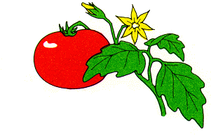

Links to other tomato and mutant resorces:
Tomato Genetics Resource Center
The Solanaceae Genome Network
TIGR Tomato Gene Index
Processing Tomato Advisory Board
Clemson University Genomics Institute
Center for functional genomics in Arabidopsis at the Max Planck Institute
